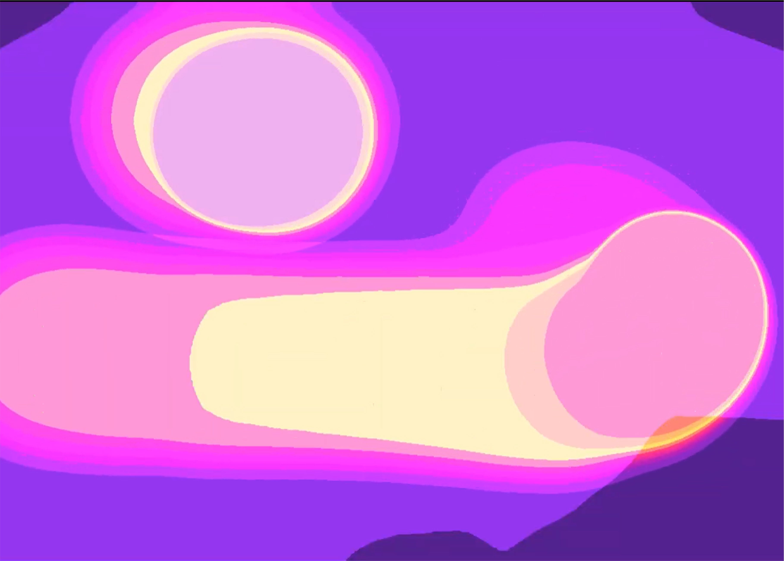
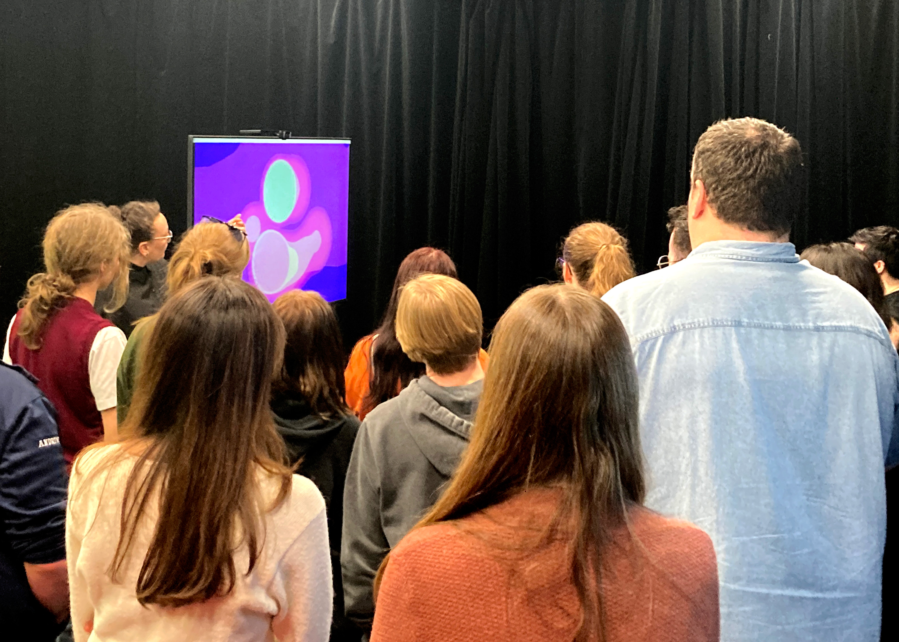
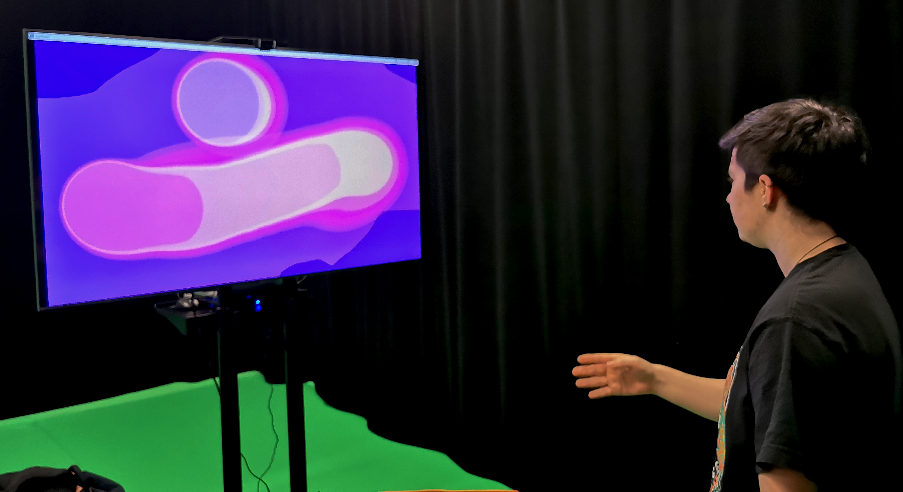
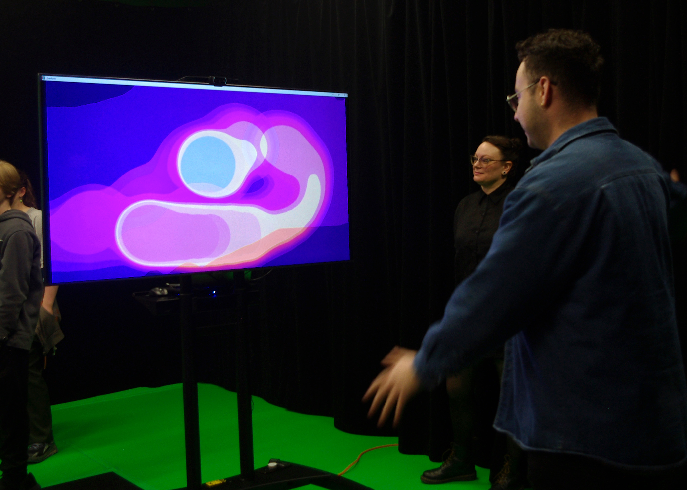
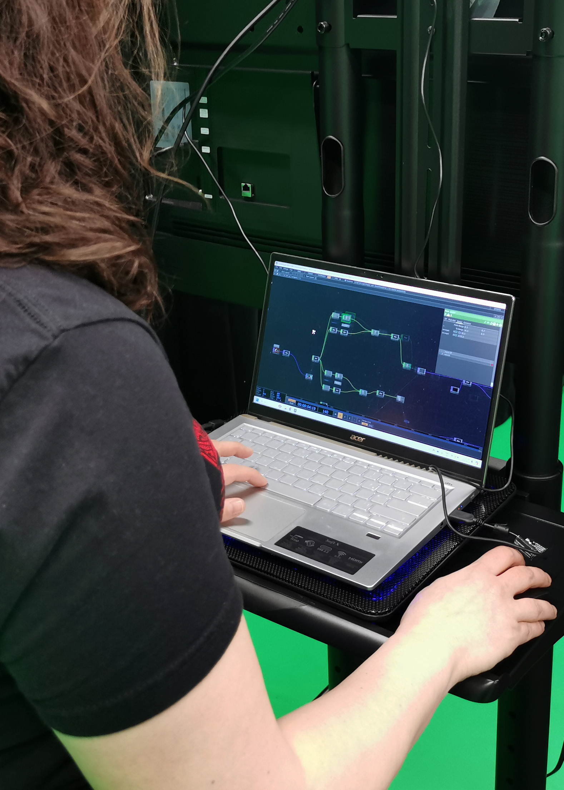

Syntony Scapes
An Interactive Sound and Motion Mural

Spring 2024
SFU Surrey Campus StudioSIAT
Syntony Scapes is an interactive project that visualizes location-based sound and movement. Developed as part of a directed study, the work explores how interactive systems can create moments of co-creation between humans, machines, and space.


“Syntony” describes a condition of harmony or attunement, where separate elements, such as sound, movement, and environment, resonate together. This work explores how human motion and ambient sound can coalesce into a shared visual language, revealing the subtle dialogue between people and place.
Orb-like forms gather around the participant's head and hand, responding fluidly to their gestures. As movement quickens, trails of shifting color trace their path through time, while ambient sounds captured by a microphone alter the size and hue of the liquid shapes.

This combination of audio and motion creates a colourful tableau reflecting real time information, unique to the location, and exists briefly and only for the people present to witness it. This explores themes of cocreation of media between human, machine, and space.


The project was created within TouchDesigner, a node-based visual programming language for creating real-time interactive multimedia experiences. Body Track is a Channel Operator (CHOP) that can detect the bounding box of a human figure along with 34 key points on the body. Using a Select operator, specific tracking points on the body can be isolated and used for input data. Each of the 34 tracking points provide movement data along the x axis and y axis. This facilitates centering visuals using these responsive coordinates.